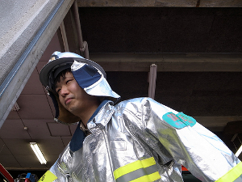

My name is Kiwamu Okabe. “岡部 究” in Japanese. I am a コピペ (“Copy and Paste” in English) Programmer.
My favorite quote is 壁は卵のために.
Challenge to create an open-source Unix-like operating system designed with strong type such as ML or Haskell.
Extend and add embedded features to Jhc Haskell Compiler. And also a Haskell compiler customized for Metasepi.
An user group for ATS language promotion of utilization. Translating ATS documents into Japanese.
The Internet of Things (or IoT for short) refers to uniquely identifiable objects and their virtual representations in an Internet-like structure. We need the language that is good for system programming with strong type, to develop the IoT device such like inexpensive and secure.
The Functional IoT is a wrestling mat that strong typed languages fight on, to become the champion of system programming language.
Trying to create a translation environment for NetBSD man pages, and translate the man pages into Japanese.
A presentation tool written with Haskell. Carettah make a new presentation with command ‘carettah -n markdown.md’. It’s controled by keyboard or Wii Remote and a clone of Rabbit. My slide created by the tool is found at slideshare.
I’m a Debian Maintainer, also maintain some packages.
Please read The Debian Manifesto (日本語訳) , if you don’t know Debian.
I’m learning ATS programing language, and also use Haskell language.
https://github.com/master-q/masterq-docs/raw/master/resume/en/resume_kiwamuokabe.pdf
pub 4096R/F2CBCA06 2009-09-12
Key fingerprint = DF60 3D3A 3C15 1B2C DF19 52F4 18DD 4D72 F2CB CA06
uid Kiwamu Okabe <kiwamu _at_ ocaml.jp>
uid Kiwamu Okabe <kiwamu _at_ masterq.net>
uid Kiwamu Okabe <kiwamu _at_ debian.or.jp>
uid Kiwamu Okabe <kiwamu _at_ gmail.com>
sub 4096R/45979C03 2009-09-12